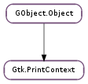

| create_pango_context() | |
| create_pango_layout() | |
| get_cairo_context() | |
| get_dpi_x() | |
| get_dpi_y() | |
| get_hard_margins() | |
| get_height() | |
| get_page_setup() | |
| get_pango_fontmap() | |
| get_width() | |
| set_cairo_context(cr, dpi_x, dpi_y) |
None
None
Bases: GObject.Object
A Gtk.PrintContext encapsulates context information that is required when drawing pages for printing, such as the cairo context and important parameters like page size and resolution. It also lets you easily create Pango.Layout and Pango.Context objects that match the font metrics of the cairo surface.
Gtk.PrintContext objects gets passed to the Gtk.PrintOperation ::begin-print, Gtk.PrintOperation ::end-print, Gtk.PrintOperation ::request-page-setup and Gtk.PrintOperation ::draw-page signals on the Gtk.PrintOperation.
Using Gtk.PrintContext in a Gtk.PrintOperation ::draw-page callback
static void
draw_page (GtkPrintOperation *operation,
GtkPrintContext *context,
int page_nr)
{
cairo_t *cr;
PangoLayout *layout;
PangoFontDescription *desc;
cr = gtk_print_context_get_cairo_context (context);
// Draw a red rectangle, as wide as the paper (inside the margins)
cairo_set_source_rgb (cr, 1.0, 0, 0);
cairo_rectangle (cr, 0, 0, gtk_print_context_get_width (context), 50);
cairo_fill (cr);
// Draw some lines
cairo_move_to (cr, 20, 10);
cairo_line_to (cr, 40, 20);
cairo_arc (cr, 60, 60, 20, 0, M_PI);
cairo_line_to (cr, 80, 20);
cairo_set_source_rgb (cr, 0, 0, 0);
cairo_set_line_width (cr, 5);
cairo_set_line_cap (cr, CAIRO_LINE_CAP_ROUND);
cairo_set_line_join (cr, CAIRO_LINE_JOIN_ROUND);
cairo_stroke (cr);
// Draw some text
layout = gtk_print_context_create_layout (context);
pango_layout_set_text (layout, "Hello World! Printing is easy", -1);
desc = pango_font_description_from_string ("sans 28");
pango_layout_set_font_description (layout, desc);
pango_font_description_free (desc);
cairo_move_to (cr, 30, 20);
pango_cairo_layout_path (cr, layout);
// Font Outline
cairo_set_source_rgb (cr, 0.93, 1.0, 0.47);
cairo_set_line_width (cr, 0.5);
cairo_stroke_preserve (cr);
// Font Fill
cairo_set_source_rgb (cr, 0, 0.0, 1.0);
cairo_fill (cr);
g_object_unref (layout);
}
Printing support was added in GTK+ 2.10.
| Returns: | a new Pango context for context |
|---|---|
| Return type: | Pango.Context |
Creates a new Pango.Context that can be used with the Gtk.PrintContext.
| Returns: | a new Pango layout for context |
|---|---|
| Return type: | Pango.Layout |
Creates a new Pango.Layout that is suitable for use with the Gtk.PrintContext.
| Returns: | the cairo context of context |
|---|---|
| Return type: | cairo.Context |
Obtains the cairo context that is associated with the Gtk.PrintContext.
| Returns: | the horizontal resolution of context |
|---|---|
| Return type: | float |
Obtains the horizontal resolution of the Gtk.PrintContext, in dots per inch.
| Returns: | the vertical resolution of context |
|---|---|
| Return type: | float |
Obtains the vertical resolution of the Gtk.PrintContext, in dots per inch.
| Returns: | True if the hard margins were retrieved |
|---|---|
| Return type: | bool, top: float, bottom: float, left: float, right: float |
Obtains the hardware printer margins of the Gtk.PrintContext, in units.
| Returns: | the height of context |
|---|---|
| Return type: | float |
Obtains the height of the Gtk.PrintContext, in pixels.
| Returns: | the page setup of context |
|---|---|
| Return type: | Gtk.PageSetup |
Obtains the Gtk.PageSetup that determines the page dimensions of the Gtk.PrintContext.
| Returns: | the font map of context |
|---|---|
| Return type: | Pango.FontMap |
Returns a Pango.FontMap that is suitable for use with the Gtk.PrintContext.
| Returns: | the width of context |
|---|---|
| Return type: | float |
Obtains the width of the Gtk.PrintContext, in pixels.
| Parameters: |
|
|---|
Sets a new cairo context on a print context.
This function is intended to be used when implementing an internal print preview, it is not needed for printing, since GTK+ itself creates a suitable cairo context in that case.